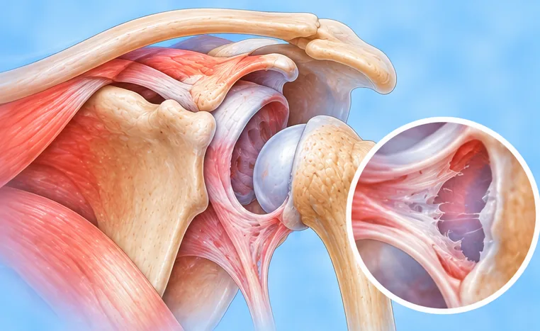
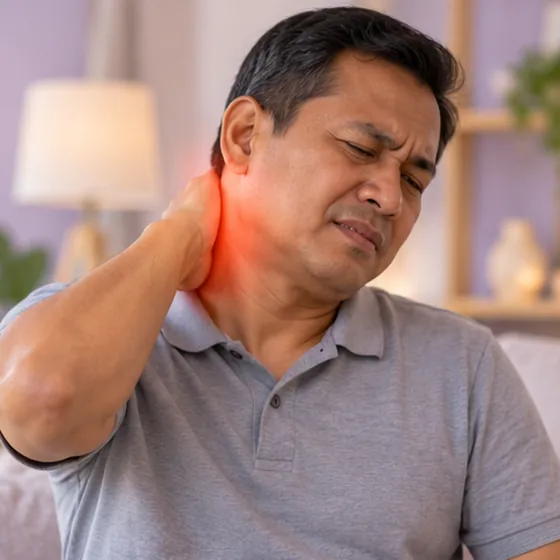
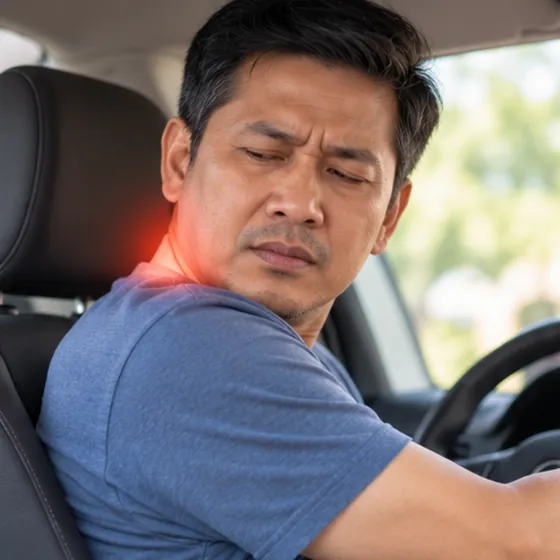
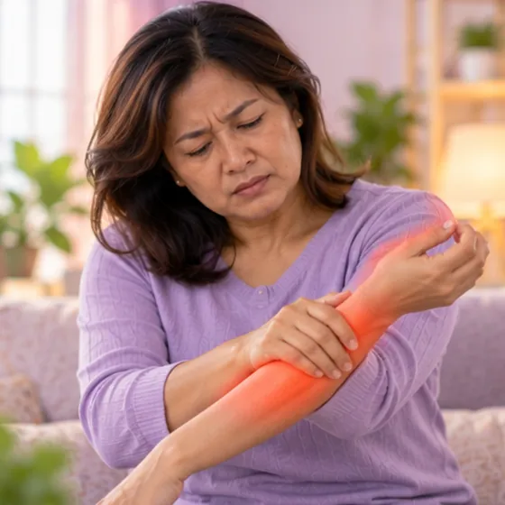
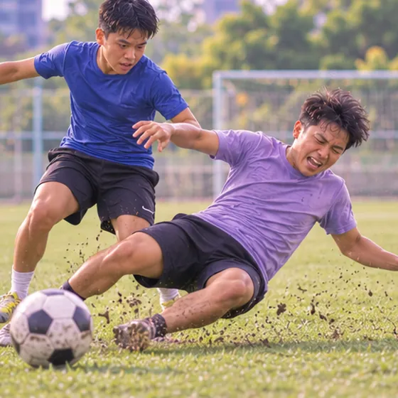

Dislocated top neck joint (atlantoaxial)
The top two bones of the neck slip out of their normal position
What it is
The joint between the first and second bones of the neck, just under the skull, moves out of place. It can press on the spinal cord and is a medical emergency.
- Top of the neck
- After injury; some children
- Neck pain, stiff head
- Which doctor
- Emergency doctor first; bone or spine surgeon
- Common in
- People with neck injuries; some children and people with joint disease
- Contagious
- No
- Course
- Needs urgent medical care; recovery depends on how severe it is
Common signs

Stiff, aching neckCervicalgia 
Hard to turn the headLimited neck movement 
Tingling down the armArm paraesthesia
More signs
- Stiff neck muscles
- Dizziness when moving the neck
Why it happens
An injury or fallTrauma 
Sports and hard knocksSports injury
Other causes
- Joint diseases such as rheumatoid arthritis that loosen the neck joint
- In some children, after a throat infection or a small knock
See a doctor first if
- Neck pain after an accident or fall: do not move, call 999
- Weakness, numbness or tingling in the arms or legs: call 999
- Trouble breathing, swallowing or speaking: call 999
- Loss of control of the bladder or bowel
- A child holding the head tilted with neck pain: see a doctor promptly
If any apply, please see a doctor before a session.
This page is general information. Please keep taking your normal medicine and keep seeing your doctor.
Keep taking your normal medicine and keep seeing your doctor. Our session is a gentle support and does not replace medical care.
Looking after yourself
- After an injury, keep the head and neck still and wait for emergency help
- Do not try to click, twist or pull the neck back into place
- Follow your doctor's advice about a neck collar and rest
- Wear seat belts and helmets, and avoid risky head-first dives
Tell your therapist
- Recent neck injury or surgery
- Numb or tingling arm
- Weak leg or foot
- Weak bones
- Dizzy when turning the head
Your therapist will go through this with you before starting.
Questions and answers
What is Dislocated top neck joint (atlantoaxial)?
The top two bones of the neck slip out of their normal position. The joint between the first and second bones of the neck, just under the skull, moves out of place. It can press on the spinal cord and is a medical emergency.
What are the common signs of Dislocated top neck joint (atlantoaxial)?
Stiff, aching neck · Hard to turn the head · Tingling down the arm
Why does Dislocated top neck joint (atlantoaxial) happen?
An injury or fall · Sports and hard knocks
How can I look after myself with Dislocated top neck joint (atlantoaxial)?
After an injury, keep the head and neck still and wait for emergency help · Do not try to click, twist or pull the neck back into place · Follow your doctor's advice about a neck collar and rest · Wear seat belts and helmets, and avoid risky head-first dives
Can an AI Body Master session help with Dislocated top neck joint (atlantoaxial)?
A session is gentle, needle-free meridian support for your wellbeing. It does not treat or cure Dislocated top neck joint (atlantoaxial) and never replaces your medicine or your doctor. Tell your therapist about it before the session starts.
Related conditions
References: General information based on public health sources such as Mayo Clinic, NHS, Cleveland Clinic and NCBI StatPearls.
Page updated: 2026-11-09